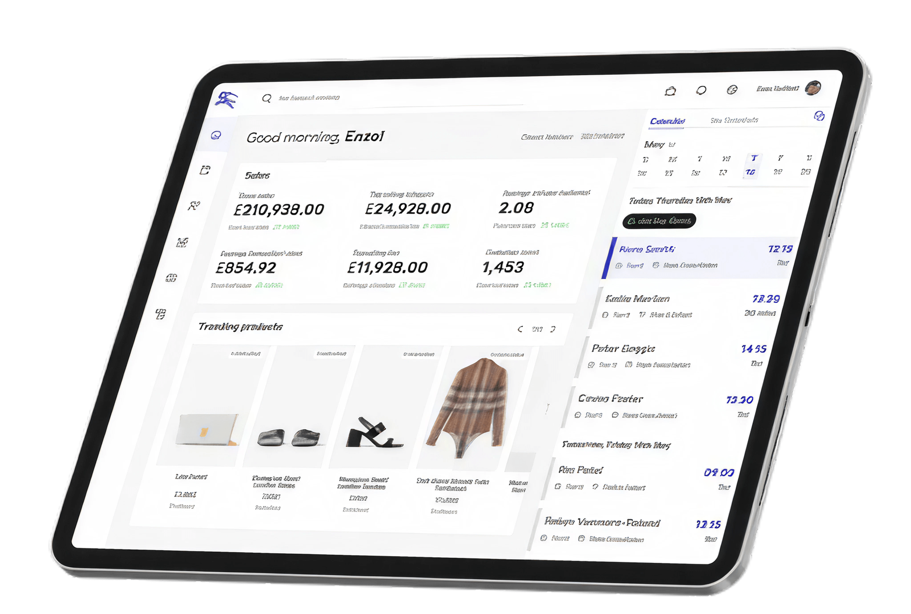

OUR PARTNERSHIP TODAY
OMNICHANNEL ENABLEMENT
Sterling is used for Order Management and Inventory Availability, Store Operations (Fulfilment and
Returns) and Call Centre Operations for all Digital Orders today (.com, B2B2C, Clientelling).
DELIVERY TRACK RECORD
Consistent delivery with 100% performance vs SLAs, bi-weekly releases, quarterly platform updates,
quality assurance and established governance.
COST CHALLENGE
We have deferred inflation uplifts, withheld environment charges and made investments in the team at
no cost to Burberry.

IBM STERLING ORDER MANAGEMENT
IBM is recognized as a top leader in the Order Management Systems (OMS) market by independent
research and advisory firm IHL Group.
4k
ORDER
TRANSACTIONS PER WEEK
TRANSACTIONS PER WEEK
40+
DIGITAL SALES
SUPPORTED
SUPPORTED
5
YEARS OF
PARTNERSHIP
PARTNERSHIP

2020
Onboarding Harrods UK
Performance for Holiday
Readiness
2021
Same Day Collect in Store
DevOps automation
2022
EU Pullback
Reserve in Store
Regional Monograming
4Gift
2023
Japan Localisation
Saturday Deliveries
Agile Transformation
2024
OMOC 2.0 Platform
Pre-order
2025
Next Gen Store 2.0 &
Call Centre Migration
Nominated Day
2026 AND BEYOND
We are committed to continually bringing Burberry the latest innovations, product enhancements, and best practices from across both IBM Technology and IBM Consulting, ensuring you always benefit from the most current capabilities and thinking.
As your Strategic Partner, we are dedicated to ensuring that we align to the Burberry Forward
strategy and share learnings and benefits surrounding our delivery whenever possible.
In the last 12 months, we have successfully delivered Store 2.0 -both localised and non-localised -
on track for the January go-live and CCC 2.0 in progress , achieving an exceptionally high-quality
outcome with nearly zero defects throughout the upgrade cycle. Our delivery model has continued to
mature with increased flexibility, streamlined governance, and strengthened project management,
supported by consistent SLA achievement across all L3 services.
To enable this level of performance, we have invested in:
- Skills upgrades across the team to ensure that the most up to date knowledge sharing takes place on the ground.
- Optimised our delivery approach to meet stringent timelines, enabled by automation where possible.
- Adopted joint end-to-end planning between IBM and Burberry to create a unified, transparent view of the Store and Contact Centre 2.0 upgrade roadmap.
- Temporary capacity – we have leveraged a flexible resource model to cover the expanded IST script preparation scope, ensuring readiness without impacting ongoing operations.
We are committed to sharing continuous improvement across our partnership, enhancing delivery
rigour, reducing cycle times, and maintaining the highest levels of quality and service reliability.
Going forwards, we will continue to leverage these efforts to continuously evolve our delivery
approach to be scalable and resilient to emerging Burberry’s business needs.